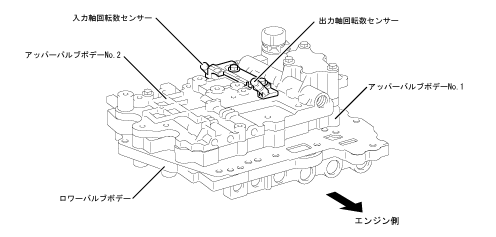

| Input/Output Shaft Speed Sensors |
| ● |
An input shaft speed sensor that detects the turbine speed signal (NT signal) and an output shaft speed sensor that detects the counter gear speed signal (NC signal) have been installed on the hydraulic valve body.
|
| ● |
The No.2 clutch piston is used as the timing rotor for the input shaft speed sensor to detect the turbine speed. In addition, the counter drive gear is used as the timing rotor for the output shaft speed sensor to detect the counter gear speed. The transmission control computer detects shift timing based on the detection signals from each sensor, and controls the hydraulic pressure appropriately according to various conditions.
|
 |